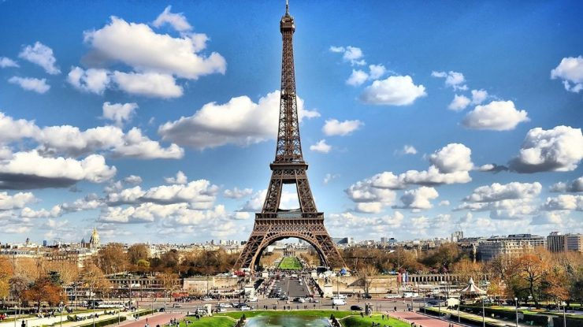
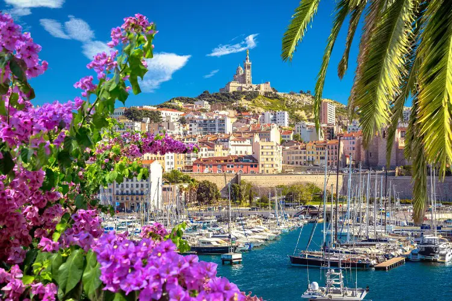

França
Galeria



Sobre
A cultura da França tem sido modelada por aspectos geográficos, eventos históricos e influência de grupos internos. O país, e sobretudo Paris, a capital, tem desempenhado um importante papel como espelho cultural da Europa (desde o século XVII) e do mundo (desde o século XIX). Desde o início do século XIX, a França também é um país exportador de cinema, moda, culinária e arte, tendo influenciado grandemente o Ocidente também nos campos da política e economia. A cultura francesa, atualmente, é marcada por grandes diferenças socioeconômicas e regionais e por fortes tendências unionistas.
Estima-se que os franceses gastem em média 1075 euros por ano em suas atividades culturais. Segundo a mesma fonte, as atividades culturais mais procuradas pelos franceses são: cinema (50%), visita de museus e monumentos (35%), visitas a exposições (25%), espetáculos amadores (20%), teatro (16%), circo (13%), parques temáticos (11%), espetáculos de rock, de jazz ou de música clássica (9%) e ópera (3%).
Mais Viagens em Destaque
-
Itália
-
Australia